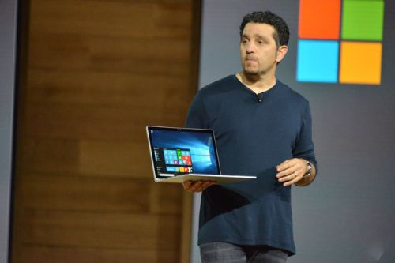

400-500-8888
时间：2016-04-21

Win10硬件新品发布会上，微软新品连连。最令外界惊喜的不是隐退半年之久才重出江湖的Lumia新旗舰，也不是代表了未来科幻世界的HoloLens虚拟现实技术，而是Surface自Surface Pro之后推出的全新产品线：Surface Book。
Surface Book是一款“倒行逆施”的复古产品。按照发布会上的说法，这是微软自家推出的第一款笔记本电脑。这款笔记本电脑正是移动大趋势下，微软遭遇迷茫时重寻方向、整肃Windows阵营的扛鼎之作。这与当年谷歌面临Android乱局时推出Nexus的做法如出一辙。
OME厂商各自为战陷入迷茫
研究机构Gartner及IDC今年7月发布的数据表明，第二季度PC销售遭遇两年来最大幅度的下滑。Gartner指出，今年第二季度，制造商总出货量仅为6840万台，同比下滑9.5%。而IDC的数据亦不乐观，6610万台全球出货量（仅PC销售，不包括平板电脑）与去年同期相比，下滑了11.8%。
实际上，PC销量下滑的大趋势早在2008年就已经开始。2009年1月，IDC就曾发出数据表示，2008年第四季度亚洲PC发货量下滑了5%，是十年来首次下降。
移动浪潮的侵蚀以及PC销量下滑给微软带来了前所未有的压力，传统的Windows OME收入持续下降，微软遭遇生死危机。相比之前Win7时代的繁盛，进入Win8/Win8.1时代后，微软OEM授权的销售情况迎来寒冬。
移动端无力，Win8/Win8.1在产品上的失败给了苹果可乘之机，传统PC市场低迷的环境中，Mac销量却逆势上扬。由于iPhone带来的延伸效应，用户纷纷以拥有一款Mac为荣，这一现象更是对Windows阵营釜底抽薪。
在这种情况下，整个Windows阵营的OME厂商迎来了一场迷茫。变形本、超极本、安卓Windows二合一等各类产品层出不穷。虽然探索精神可嘉，但由于Win8/Win8.1过于失败，这些产品即使在某几点上把握了用户痛点，也依旧无力回天。
这种各自为战的探索也带来了更大的麻烦，OME厂商如无头苍蝇一般，无人知晓什么才是真正符合体验的经典作品，无人能够在软硬件层面同时把握住未来的趋势和潮流。这更是加剧了Mac与Windows对比时，Windows的式微与无力。
一部iPhone、一部Macbook成为了不少高端人士的标配，以至于在去年Surface Pro3的发布会上，现场记者纷纷用Macbook速记，给微软打了一个大大的耳光。
微软倒行逆施背后的野心
有分析人士认为，Surface Book是一款倒行逆施的产品，与微软移动为先、云为先的战略相违背。
从某种程度上看，Surface Book这样一款产品的确堪称“倒行逆施”，一方面造型复古，将传统的笔记本电脑加上触屏、手写笔设计重新兜售；另一方面便携性不足，与Surface Pro这样一个成功的产品线相比，在移动办公层面上相形见绌。
但出乎意料的是，这样一款产品一经诞生就受到了广泛好评。微软发布会现场直播画面中，Surface Book发布时是外媒记者们最为兴奋的时刻。微软高管以及现场记者纷纷起立鼓掌，甚至发出惊讶的赞叹，向Surface Book致敬。
国内数码行业的编辑同学们甚至在朋友圈说了这样一句话：终于有一台有逼格的Windows笔记本了，以后再也不会在Mac用户面前感觉低人一等。买买买，这也成为了国内不少对这款产品有所了解的消费者的一致声音。
Surface Book实际上也确实是叫好又叫座。根据国外报道，由于销售太火爆，Surface Book顶配版一预售便已断货，成为一匹黑马，让原本的明星Surface Pro 4瞬间黯淡无光。
Surface Book倒行逆施的背后，其实折射了如今的市场变局以及微软的野心。
1、移动市场的拨乱反正
这些年来，所谓移动的观点在微软和谷歌两家在手机市场两分天下之后成为了主流观点，虽然曾经不少分析人士曾经叫嚣着iOS和Android要瓜分微软Windows主导的个人PC市场，将Windows系统“扔进历史的垃圾箱”。但iOS和Android在生产力工具这一层面上始终没有突破，人们逐渐意识到，传统的笔记本电脑才是他们应该回归的地方。
这从从今年Thinkpad回归经典设计这一事件可见一斑。联想设计副总裁David Hill 6月份在其博客上公布了一组ThinkPad经典款概念设计，他的想法是“旧瓶装新酒”，让现在的配件使用曾经的外观设计，让复古风也吹到ThinkPad。这在某种程度上看，同样也是对目前移动潮流的一场反叛。
所以我们看到，iPad Pro配上了新款Office套件以及手写笔，专注做一款用于办公的生产力工具。谷歌的新款平板Pixel C也破天荒地配上了键盘，企图做一款轻办公工具。国内市场上，Remix之流也在探索如何利用安卓系统做一款生产力工具。
做一款生产力工具，这才企业基因里就是微软最擅长做的事情，此前以Surface Pro3和Surface3为代表的Surface系列产品大获成功更是昭示了一个真理：Windows才是最高效的生产力工具。
此次回归到笔记本的经典造型，Surface Book实际上正是在尝到Surface Pro3和Surface3带来的甜头之后大刀阔斧进行新尝试，重新夺回对市场的主导权。
2、微软暗藏的Nexus思维
Nexus系列产品作为谷歌的亲儿子，一直都肩负着统领市场、树立标杆的重要作用。此次微软推出Surface Book的意图与谷歌推出Nexus手机几乎如出一辙。
Surface Book一方面承担着教育OEM厂商如何做一款优雅的Windows笔记本的重任，另一方面则是直接与Macbook对标，抢夺苹果在笔记本市场的高端用户。
从年初Thinkpad回归经典设计到Surface Book发布,PC阵营应当算是结束了混乱的局面,也找到了稳定的支点。在硬件基本同质化的背景下,微软意图借助生产力方面的巨大优势,推出Windows平台下集性能和设计上镇的住台面的产品,守住重计算和企业市场,和诸多PC厂商一起在二合一的产品模式下推进大一统的进程。
在最新出炉的微软2015财年第三季度业绩报告中，这一点体现的更为明显。根据业绩报告内容，微软本季度的Windows OME收入降低22%。特别是在Windows XP结束支持之后，Windows7迎来了大幅升级，而Windows 8.1专业版OEM的收入却降低了19%。
OEM收入下降对于微软来说，并非坏消息。原有的盈利模式正在被微软打破，当微软出现在iPad Pro发布会现场,用Ofiice为iPad Pro的生产力背书时,所有人都觉得所有人都觉得微软和苹果经历多年的相爱相杀之后竟握手言和。
而从Surface 的掌舵人Panos Panay昨日复仇般针对Macbook作出多项对比的举动来看，iPad Pro已经完全变成了微软利用office软件捞钱的工具，Surface Book以及Surface Pro4为代表的硬件产品才是微软的目的所在。
后记：
微软移动端上的劣势反而触发了全平台的整合。与苹果从移动端逐渐侵蚀到桌面系统不同的是，微软正在通过传统PC端的优势逐渐增强原本弱势的移动端。相信在通用应用开发的推进之后，微软会迎来一场全新的竞争格局。
Copyright © 2015-2016 Maker Cloud 创客云 版权所有粤ICP备32852599-1


 在线咨询
在线咨询 在线咨询
在线咨询 400-500-8888
400-500-8888